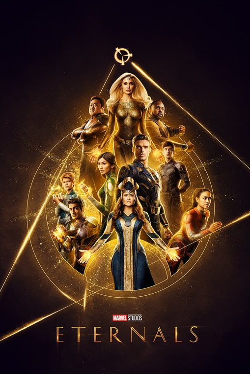
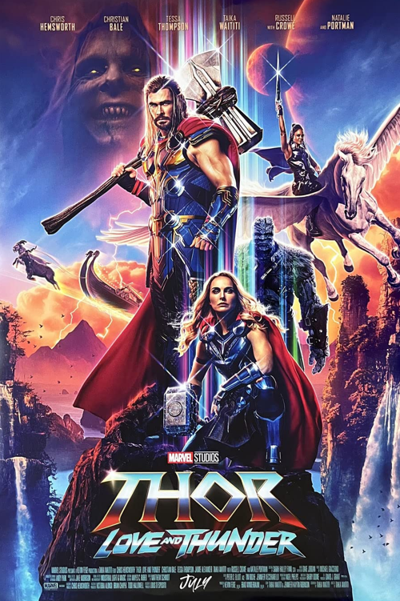
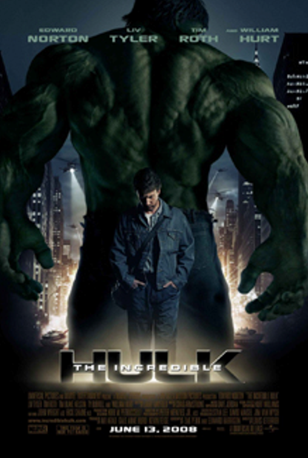
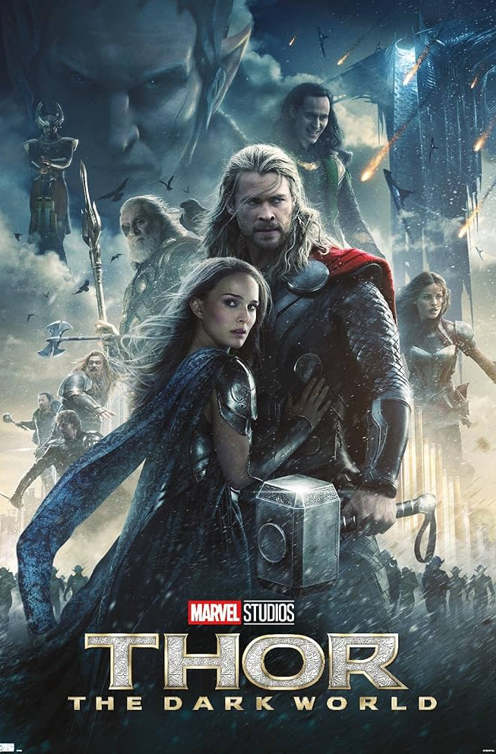
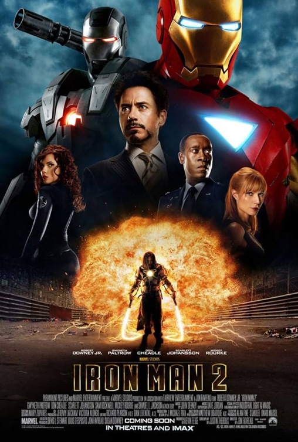

BOTTOM 5 MOVIE RANKINGS

Eternals (2021)
- Many critics felt the movie tried to introduce too many characters at once, which made the story feel crowded and hard to follow.
- The slow pacing and long runtime made the plot feel stretched out, even though the ideas were big and ambitious.
- While the visuals were praised, the emotional moments didn’t hit as strongly because the film had so many characters to balance.
- Viewers also said the tone felt uneven, switching between philosophical themes and action without a smooth transition.

Thor: Love and Thunder (2022)
- The movie received criticism for having too many jokes that undercut emotional scenes, making the tone feel inconsistent.
- Some viewers felt that the villain, Gorr the God Butcher, was interesting but not explored deeply enough.
- The fast pacing made certain story moments feel rushed, leaving less room for character development.
- The overall plot felt messy to many critics, with too many side plots and not enough focus on the main story.

The Incredible Hulk (2008)
- Although the action scenes were solid, many critics felt the story was too simple and didn’t explore Bruce Banner’s character very deeply.
- The tone was darker and more serious than most other MCU films, which made it feel disconnected from the rest of the universe.
- Some viewers thought the supporting characters weren’t very memorable or emotionally engaging.
- The movie lacked the humor and personality that later MCU movies became known for.

Thor: The Dark World (2013)
- A common complaint was the weak villain, Malekith, who many viewers found bland and uninteresting.
- The story was seen as confusing and not very exciting, with too much fantasy-style lore and not enough character focus.
- While the Thor–Loki relationship had strong moments, the overall plot didn’t feel very impactful.
- Many critics felt the movie lacked originality compared to other Marvel releases.

Iron Man 2 (2010)
- The movie tried to introduce several new characters and future MCU setups, which made the story feel overstuffed.
- Some viewers felt Tony Stark’s character arc didn’t have the same emotional impact as in the first movie.
- The villains, while visually interesting, didn’t feel very threatening or well-developed.
- The plot jumped between too many storylines, causing the movie to feel unfocused at times.